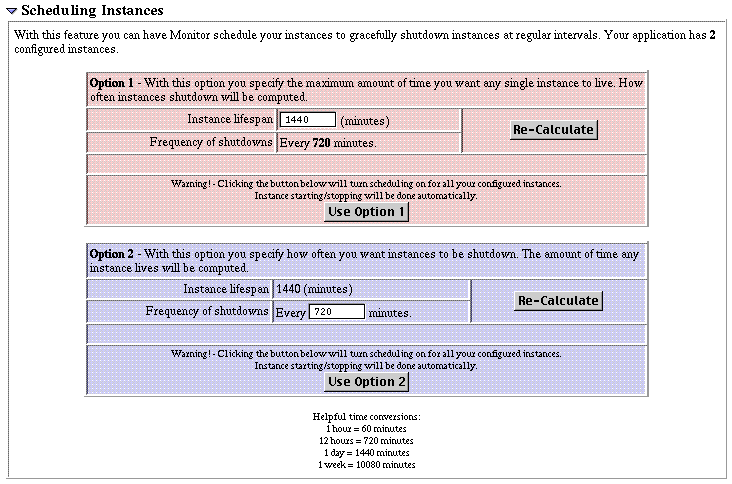
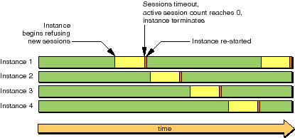
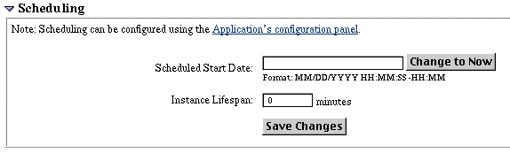

Table of Contents
Table of Contents  Next Section
Table of Contents
Next Section
Table of Contents  Previous Section
Previous Section
Use the Scheduling Instances form of the Application Configuration page to configure a pool of instances. This form allows you establish a staggered schedule for stopping and restarting the instances. Here is an example of the Scheduling Instances form:

Either specify the instance lifespan or the frequency of shutdown (both in minutes) and then click the appropriate Use Option button. Each instance runs for a specified period before it begins refusing new sessions, and then it shuts down when the minimum active session threshold is reached. The diagram below displays an example schedule for four instances.

Do not set the frequency of shutdowns too low. If the session time-out for your application is 30 minutes, then the frequency of application shutdowns should not be less than 30 minutes. It should probably be several times higher than that. These settings are configurable because each application may have different needs.
You can also schedule instances individually with the Scheduling option of the Instance Configuration page (to go to this page, click Config next to an instance on the Detail View page):

Specify the start date (in the recommended format) and the lifespan of the instance in minutes, then click Save Changes
If you have set up scheduling for an application and then add a new instance, the new instance does not have a schedule that is synchronized with the other instances. To insert this new instance into the schedule you need to go to the Application Configuration page and reset the schedule, or you must manually create the schedule in the Instance's Configuration page.
You can programmatically set up an application to shut down in addition to scheduling shutdowns using the Monitor. If you want to use internal scheduling algorithms in your instance, it is not recommended that you also use Monitor's scheduling features. Instead, just use Monitor to recover failures of your instances and to access statistics.
Table of Contents Next Section